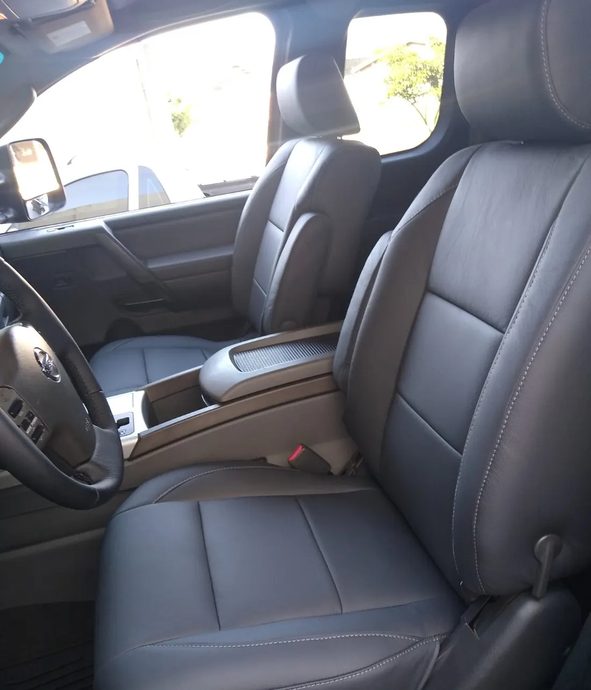
Tapeçaria automotiva em Campo Grande
Bancos em couro, forros de porta, teto, volante e assoalho para carros, caminhonetes e barcos, no Centro. Você manda as fotos do veículo e pede o orçamento pelo WhatsApp.
- Veículos nacionais e importados
- Segunda a sexta, das 7h30 às 17h30
- Rua Treze de Maio, 800, Centro
Do Fusca à caminhonete, o interior sai daqui refeito.
A Tapeçaria Mendes fica na Rua Treze de Maio, 800, no Centro de Campo Grande. Trabalha com todo tipo de carro e também com barcos: bancos, forros de porta, assoalho, forro de teto e volante, em veículos nacionais e importados.
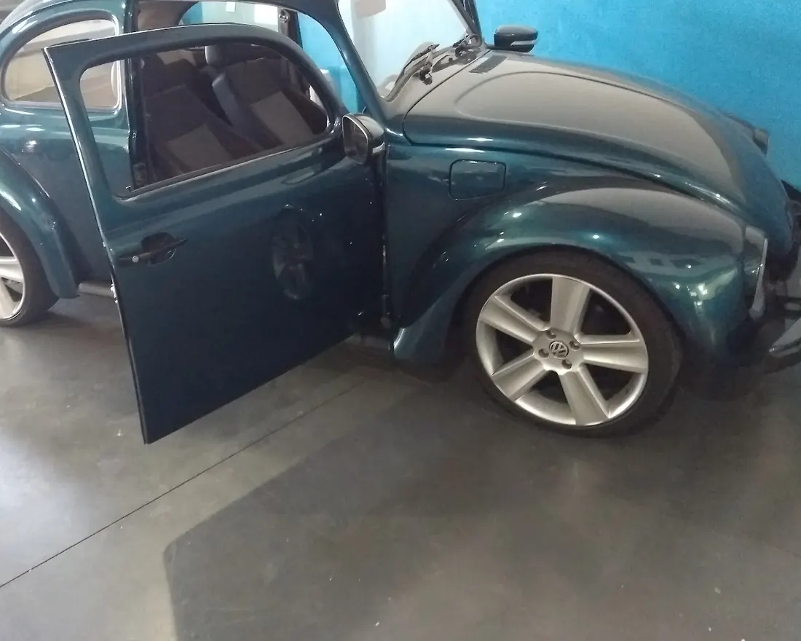
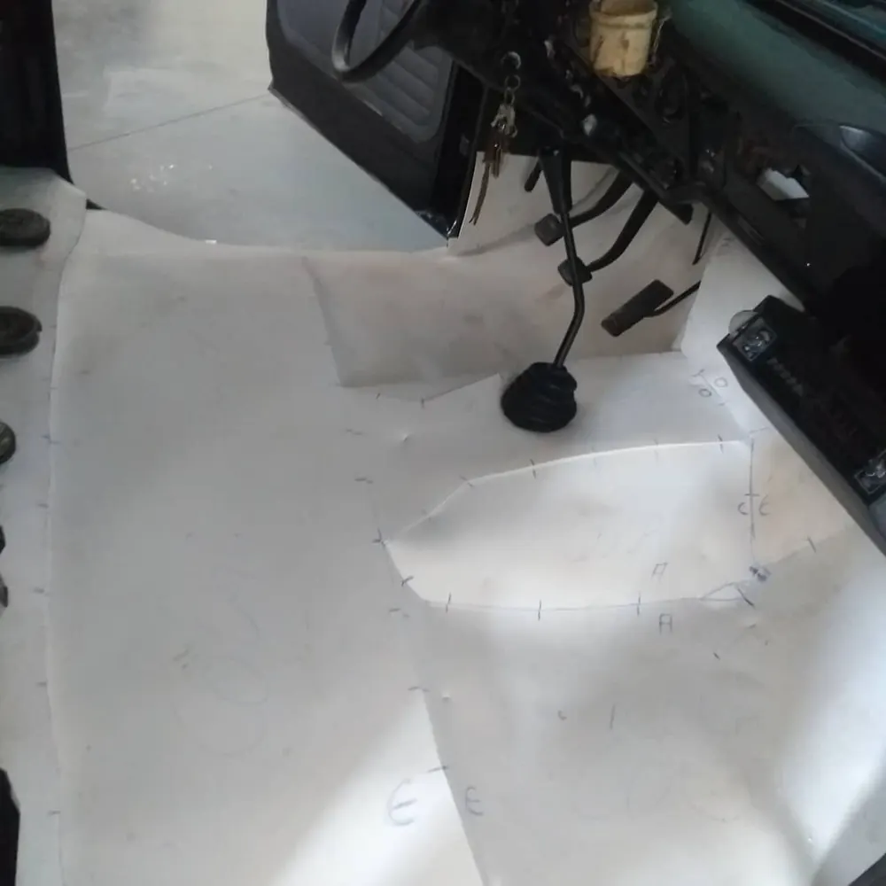
O que a Tapeçaria Mendes faz
Toque em um serviço para ver um trabalho e pedir o orçamento dele.
Bancos
Bancos em couro
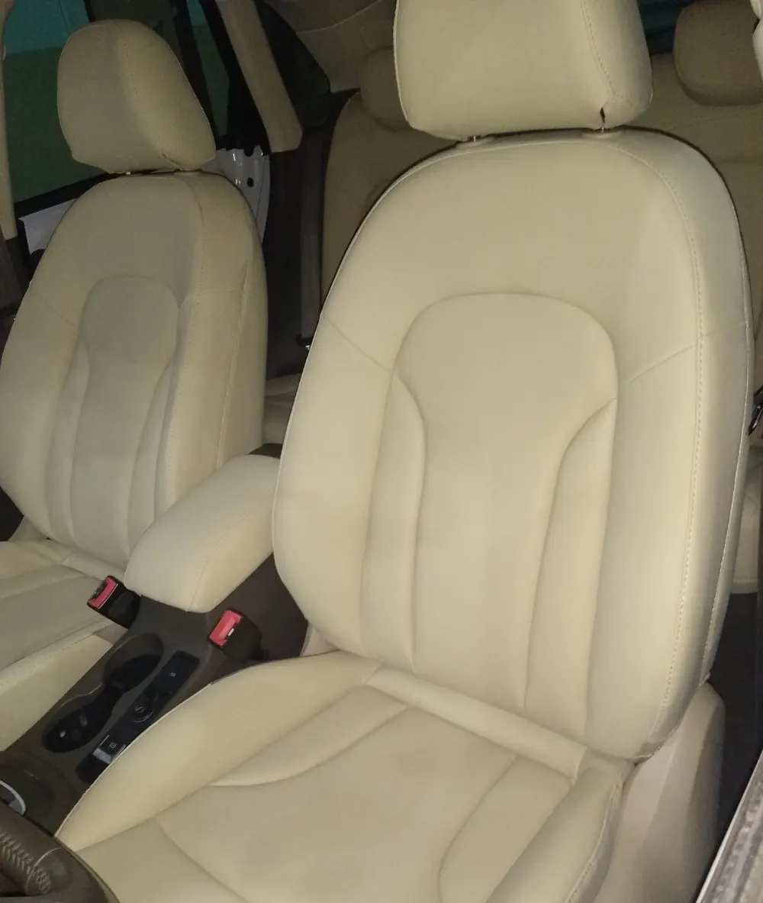
Revestimento dos bancos dianteiros e traseiros em couro. Nas fotos da oficina aparecem bege, preto, cinza e vinho.
Valor sob consulta
Pedir orçamento deste serviçoConserto de banco
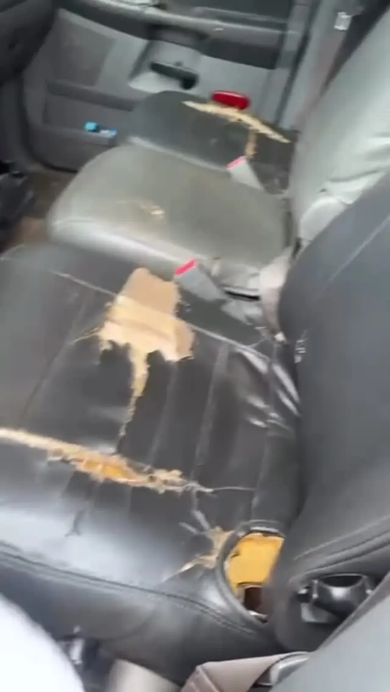
Conserto de banco rasgado ou de assento gasto.
Valor sob consulta
Pedir orçamento deste serviçoPortas, teto e assoalho
Forros de porta
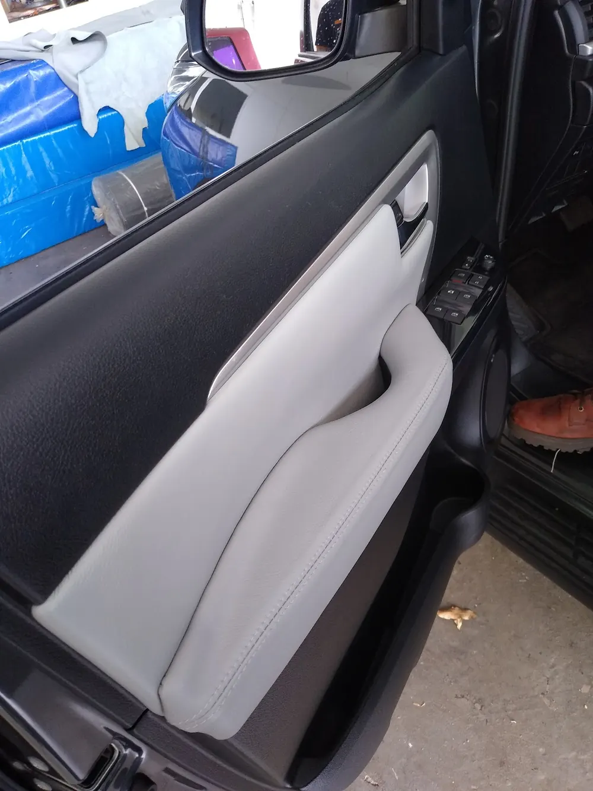
Forro de porta refeito para acompanhar os bancos.
Valor sob consulta
Pedir orçamento deste serviçoForro de teto
Troca do forro de teto. O serviço está nos destaques do Instagram da empresa.
Valor sob consulta
Pedir orçamento deste serviçoAssoalho
Assoalho novo, feito a partir de um molde tirado no próprio carro.
Valor sob consulta
Pedir orçamento deste serviçoVolante e cintos
Volante
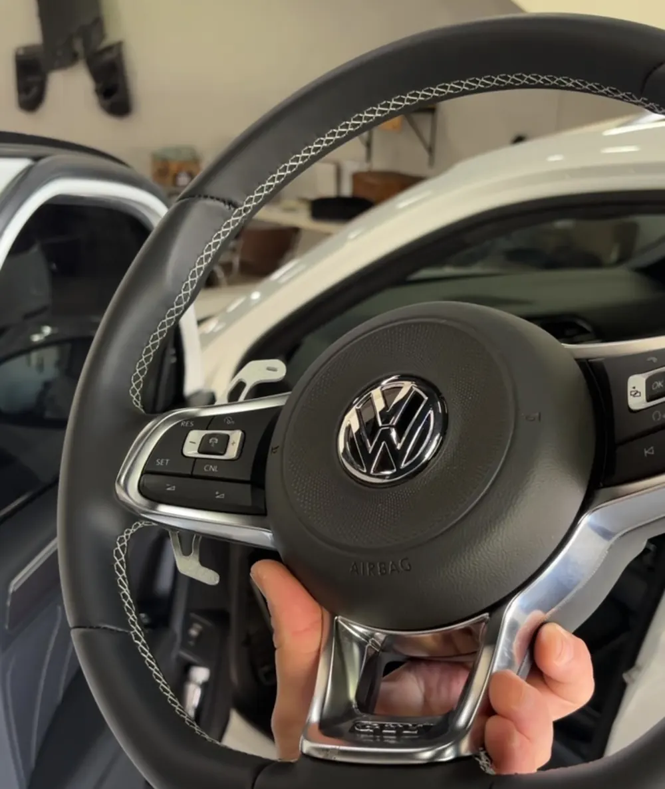
Revestimento de volante em couro ou Alcântara, com costura aparente.
Valor sob consulta
Pedir orçamento deste serviçoCintos
Aparece nos destaques do Instagram da empresa. Os detalhes entram quando a Tapeçaria Mendes confirmar.
Valor sob consulta
Pedir orçamento deste serviçoBarcos e projetos
Bancos de barco
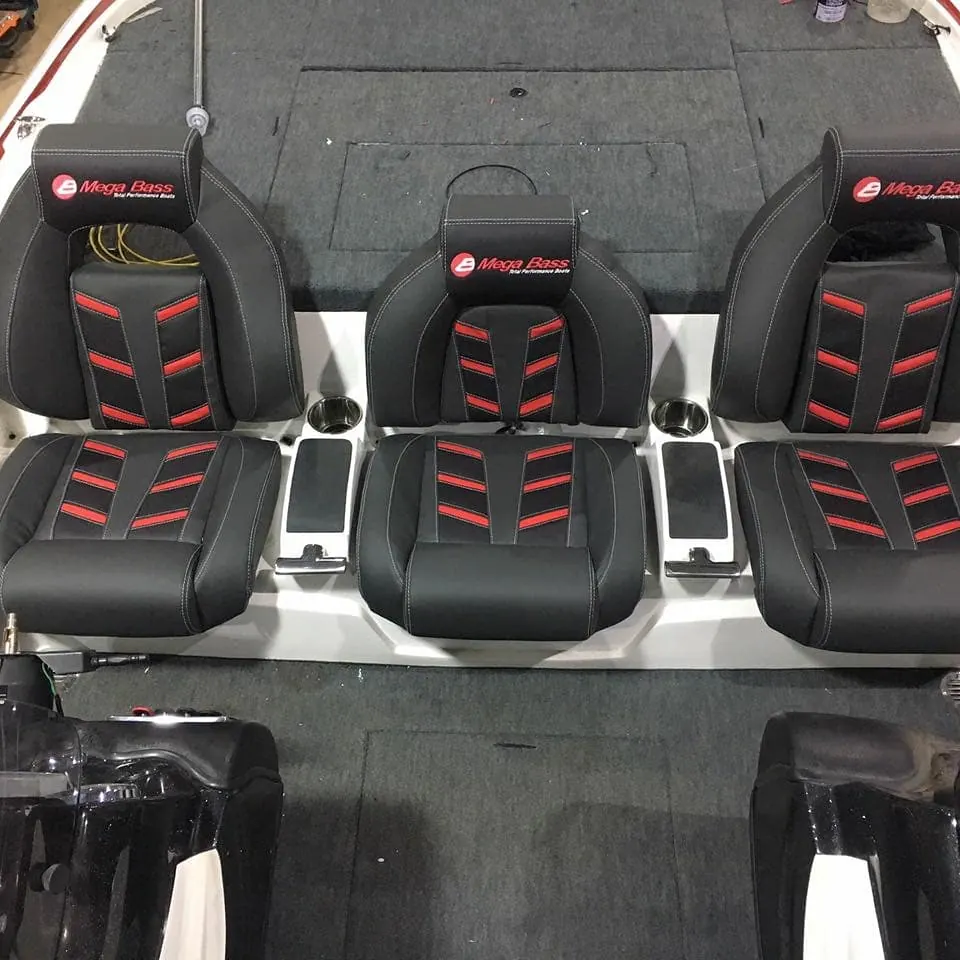
Bancos de barco revestidos, como os deste barco.
Valor sob consulta
Pedir orçamento deste serviçoProjetos personalizados
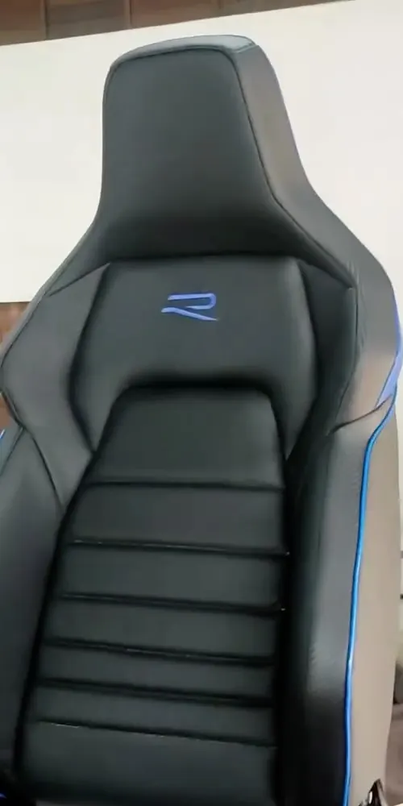
Bancos esportivos, tecido xadrez, vivo colorido e logo no encosto: projetos sob medida para quem está montando o carro.
Valor sob consulta
Pedir orçamento deste serviçoLimpeza a seco e aplicação de insulfilm aparecem em um banner antigo da empresa. Entram no site se a Tapeçaria Mendes confirmar que ainda faz.
O acabamento, de perto
Recortes das fotos da oficina. Materiais e cores disponíveis: [A CONFIRMAR].
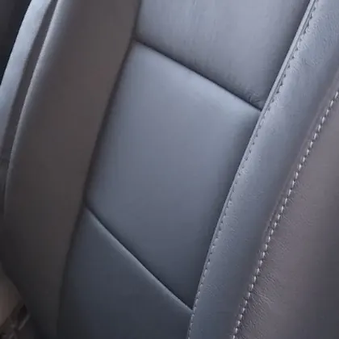
Costura aparente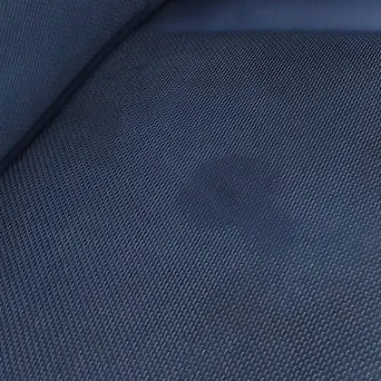
Couro perfurado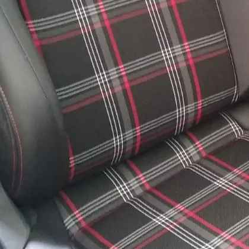
Tecido xadrez- Gomos no couro
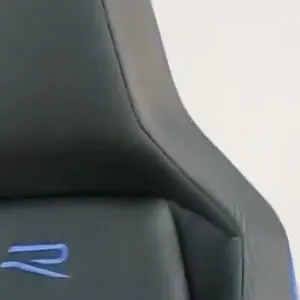
Logo e vivo colorido
Antes e depois só entram em par: o mesmo banco, do jeito que chegou e do jeito que saiu.
Trabalhos da oficina
Fotos publicadas pela própria Tapeçaria Mendes no Google e no Instagram @mendestapeceiro.
Como pedir seu orçamento
Escolha o serviço
Bancos, portas, teto, volante, assoalho ou um projeto sob medida.
Mande fotos do veículo
Do banco, da porta ou da peça, do jeito que estão hoje.
Conte o que você quer
O material, a cor e o que precisa ser refeito.
Peça o orçamento
O formulário monta a mensagem e abre o WhatsApp.
A Tapeçaria Mendes responde
Depois de avaliar o pedido, pelo próprio WhatsApp.
Peça seu orçamento
Preencha o que já sabe. A mensagem chega pronta no WhatsApp da Tapeçaria Mendes, e você manda as fotos do veículo na mesma conversa.
Cada orçamento depende do veículo, do material e da avaliação da Tapeçaria Mendes.
Assim a mensagem chega no WhatsApp
- WhatsApp do Bruno(67) 99161-5839
- WhatsApp do Mendes(67) 99288-5351
Avaliações de clientes no Google
Rua Treze de Maio, 800, no Centro.
Campo Grande (MS), CEP 79004-421.
- Segunda a sexta
- 7h30 às 17h30
- Sábado e domingo
- Fechado
Dúvidas comuns
Quanto custa?
Cada orçamento depende do veículo, do material e do serviço. Mande as fotos pelo WhatsApp e a Tapeçaria Mendes responde com o valor.
Como peço um orçamento?
Pelo formulário desta página: escolha o serviço, diga qual é o veículo e o que você quer. A mensagem abre pronta no WhatsApp.
Vocês atendem aos sábados?
Pelo horário publicado no Google, o atendimento é de segunda a sexta, das 7h30 às 17h30.
Fazem serviço em barco?
Sim. Entre os trabalhos publicados pela oficina há bancos de barco.
Quanto tempo leva o serviço?
[A CONFIRMAR] O prazo de cada tipo de serviço será informado pela Tapeçaria Mendes.
Quais são as formas de pagamento?
[A CONFIRMAR]